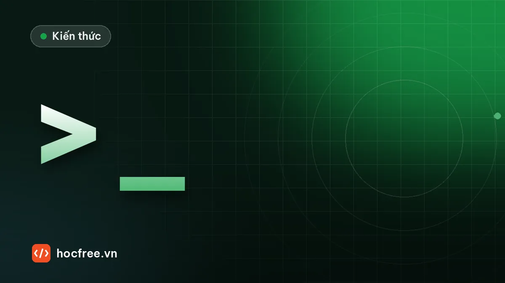

Môi trường ảo, pip và requirements.txt cho dự án AI Vision
Tạo venv cho từng dự án, cài đúng gói OpenCV, lưu requirements.txt, cài offline cho máy nhà máy, cài PyTorch nhận GPU và script kiểm tra môi trường.

Học xong bài này, bạn sẽ
- Tạo môi trường ảo cho từng dự án
- Cài thư viện bằng pip và lưu requirements
- Kiểm tra PyTorch nhận GPU
Nên học trước: Đọc ghi file, pathlib và xử lý lỗi
Nội dung bài viết
- 1. Vì sao mỗi dự án cần một môi trường ảo?
- 2. Tạo và kích hoạt môi trường ảo bằng venv
- 3. Cài thư viện bằng pip
- 4. Lưu danh sách thư viện: requirements.txt
- 5. uv: công cụ thay thế nhanh hơn (tùy chọn)
- 6. VS Code dùng đúng môi trường
- 7. PyTorch và GPU
- 8. Script kiểm tra môi trường
- 9. Cấu trúc thư mục dự án gợi ý
- 10. Lỗi thường gặp
- Tóm tắt
- Bài tập
Rất nhiều người bỏ cuộc khi học AI không phải vì thuật toán khó, mà vì môi trường cài đặt rối tung: xung đột phiên bản, PyTorch không nhận GPU, code chạy máy này không chạy máy kia. Ở bài "Đọc ghi file, pathlib và xử lý lỗi" bạn mới chỉ dùng thư viện chuẩn có sẵn trong Python. Từ bài này trở đi ta cần thư viện bên ngoài: NumPy, OpenCV, rồi PyTorch. Bài này dạy cách cài chúng gọn gàng, mỗi dự án một môi trường riêng, có file ghi lại phiên bản để mang sang máy tính ở nhà máy vẫn chạy y hệt. Bài tiếp theo, "Xử lý thư mục ảnh, CSV và log", sẽ dùng ngay môi trường này.
1. Vì sao mỗi dự án cần một môi trường ảo?
Khi bạn gõ pip install opencv-python mà không chuẩn bị gì, thư viện được cài vào bản Python chung của máy. Sau vài tháng, máy bạn sẽ có tình huống quen thuộc:
- Dự án A (trạm kiểm tra cũ) chạy ổn với NumPy 1.26 và một thư viện của hãng camera chỉ hỗ trợ NumPy 1.x.
- Dự án B (huấn luyện YOLO) cần NumPy 2.x và PyTorch mới.
- Cài cho B xong thì A báo lỗi. Gỡ để chữa A thì B hỏng.
Môi trường ảo (virtual environment) là một thư mục chứa bản sao nhẹ của trình thông dịch Python và bộ thư viện riêng của một dự án. Mỗi dự án một môi trường, các phiên bản không đụng nhau. Hỏng thì xóa thư mục, tạo lại trong vài phút.
| Không dùng môi trường ảo | Dùng môi trường ảo |
|---|---|
| Mọi dự án dùng chung một bộ thư viện | Mỗi dự án một bộ thư viện riêng |
| Nâng cấp một gói có thể làm hỏng dự án khác | Nâng cấp chỉ ảnh hưởng dự án đang làm |
| Không biết dự án thật sự cần những gì | Danh sách gói rõ ràng, xuất ra requirements.txt |
| Cài sang máy nhà máy: "máy em chạy được mà" | Tạo lại đúng môi trường bằng một lệnh |
pip install vào Python chung của hệ thống. Mỗi thư mục dự án có một môi trường ảo riêng, thường đặt tên .venv nằm ngay trong thư mục dự án.2. Tạo và kích hoạt môi trường ảo bằng venv
venv có sẵn trong Python, không cần cài thêm. Mở terminal trong thư mục dự án (trong VS Code: Terminal → New Terminal):
# Tạo môi trường ảo tên .venv trong thư mục hiện tại
python -m venv .venv # Windows có thể dùng: py -m venv .venv
# macOS / Linux: python3 -m venv .venvKích hoạt (activate) để terminal dùng Python và pip của môi trường đó. Lệnh khác nhau theo loại terminal:
| Terminal | Lệnh kích hoạt |
|---|---|
| Windows PowerShell (mặc định trong VS Code) | .venv\Scripts\Activate.ps1 |
| Windows Command Prompt (cmd) | .venv\Scripts\activate.bat |
| macOS / Linux (bash, zsh) | source .venv/bin/activate |
Kích hoạt thành công thì đầu dòng lệnh có thêm (.venv). Kiểm tra Python đang dùng có đúng là của môi trường không:
python -c "import sys; print(sys.executable)"D:\du-an\tram-kiem-tra\.venv\Scripts\python.exe(Đường dẫn trên là ví dụ trên Windows; trên Linux sẽ là .../.venv/bin/python.) Muốn thoát môi trường, gõ deactivate.
.ps1. Chạy một lần lệnh sau (chỉ áp dụng cho tài khoản của bạn) rồi kích hoạt lại:Set-ExecutionPolicy -ExecutionPolicy RemoteSigned -Scope CurrentUserMuốn chọn đúng phiên bản Python khi máy có nhiều bản, trên Windows dùng trình khởi động py: py -V:3.13 -m venv .venv (với trình khởi động cũ có thể viết py -3.13 -m venv .venv). Lệnh py list (hoặc py -0 ở trình khởi động cũ) liệt kê các bản đã cài.
Ba điều cần nhớ về thư mục .venv:
- Không copy
.venvsang máy khác hay sang thư mục khác: bên trong có đường dẫn tuyệt đối, chuyển chỗ là hỏng. Cái cần mang theo là danh sách gói (mục 4). - Không đưa
.venvlên Git (thêm vào.gitignore). - Hỏng thì xóa cả thư mục
.venvrồi tạo lại, không có gì phải tiếc.
3. Cài thư viện bằng pip
Sau khi kích hoạt môi trường, cài các thư viện của chặng 1 và 2:
python -m pip install --upgrade pip
python -m pip install numpy opencv-pythonViết python -m pip thay vì chỉ pip là thói quen tốt: nó bảo đảm pip cài vào đúng bản Python mà lệnh python đang trỏ tới. Rất nhiều lỗi "đã cài rồi mà vẫn báo không có module" đến từ việc pip và python thuộc hai bản Python khác nhau.
| Lệnh | Tác dụng |
|---|---|
python -m pip install numpy==2.3.4 | Cài đúng một phiên bản |
python -m pip install "numpy>=2.0,<3" | Cài bản bất kỳ trong khoảng (nhớ đặt trong dấu nháy) |
python -m pip install -U opencv-python | Nâng cấp lên bản mới nhất |
python -m pip uninstall opencv-python | Gỡ gói |
python -m pip list | Liệt kê gói đã cài và phiên bản |
python -m pip show opencv-python | Thông tin một gói: phiên bản, nơi cài, phụ thuộc |
Chọn đúng gói OpenCV
OpenCV trên PyPI có 4 gói. Chúng đều cung cấp cùng một module cv2, nên chỉ được cài một gói; cài hai gói cùng lúc thì file của gói này đè lên gói kia và dễ sinh lỗi khó hiểu.
| Gói | Có cửa sổ (imshow) | Có module mở rộng (contrib) | Dùng khi |
|---|---|---|---|
opencv-python | Có | Không | Máy tính học tập, PC trạm có màn hình. Chọn gói này nếu không chắc. |
opencv-contrib-python | Có | Có | Cần thuật toán trong nhóm contrib |
opencv-python-headless | Không | Không | Máy chủ không màn hình, Docker |
opencv-contrib-python-headless | Không | Có | Máy chủ cần contrib |
Nếu lỡ cài lẫn: gỡ tất cả các gói OpenCV rồi cài lại đúng một gói.
4. Lưu danh sách thư viện: requirements.txt
Môi trường chạy tốt rồi thì "chụp ảnh" lại danh sách gói và phiên bản:
python -m pip freeze > requirements.txtNội dung file có dạng (phiên bản trên máy bạn sẽ khác):
numpy==2.3.4
opencv-python==4.12.0.88Trên máy khác (hoặc chính máy bạn sau khi xóa .venv), tạo lại đúng môi trường:
python -m venv .venv
# kích hoạt như mục 2, rồi:
python -m pip install -r requirements.txtpip freeze ghi mọi gói trong môi trường, kể cả gói phụ thuộc được kéo theo. Khi dự án lớn dần, nhiều nhóm giữ hai file: requirements.in viết tay chỉ các gói chính (numpy, opencv-python, torch), và requirements.txt là kết quả freeze có đủ phiên bản để tái lập. Với người mới, một file freeze là đủ.
Cài lên máy nhà máy không có Internet
PC trạm kiểm tra thường bị cách ly khỏi Internet. Tải sẵn các file cài đặt (wheel) trên máy có mạng, chép bằng USB rồi cài offline:
# Trên máy có mạng (cùng hệ điều hành và cùng phiên bản Python với máy trạm)
python -m pip download -r requirements.txt -d wheels
# Trên máy trạm, sau khi tạo và kích hoạt .venv
python -m pip install --no-index --find-links wheels -r requirements.txtWheel phụ thuộc hệ điều hành và phiên bản Python (ví dụ file có chữ cp313-win_amd64 chỉ dành cho Python 3.13 trên Windows 64 bit). Tải trên máy Linux mang sang Windows sẽ không cài được.
5. uv: công cụ thay thế nhanh hơn (tùy chọn)
uv là công cụ quản lý gói và môi trường cho Python, cài thư viện nhanh hơn pip đáng kể và quản lý luôn cả phiên bản Python. Bạn có thể học bằng venv + pip trước; khi đã quen, uv giúp tiết kiệm nhiều thời gian chờ.
# Cách 1: dùng uv như pip, vẫn với requirements.txt
uv venv # tạo .venv
uv pip install -r requirements.txt # cài nhanh hơn pip
# Cách 2: quản lý dự án đầy đủ với pyproject.toml
uv init vision-demo
cd vision-demo
uv add numpy opencv-python # tự tạo .venv, ghi vào pyproject.toml và uv.lock
uv run python main.py # chạy trong môi trường của dự án
uv sync # trên máy khác: tạo lại đúng môi trường từ uv.lockFile pyproject.toml ghi các gói chính, uv.lock ghi chính xác mọi phiên bản: vai trò giống cặp requirements.in/requirements.txt ở trên.
6. VS Code dùng đúng môi trường
- Ctrl+Shift+P → Python: Select Interpreter → chọn bản có
.venvcủa dự án. Thanh trạng thái góc dưới phải hiện tên môi trường. - Sau khi chọn, terminal mới mở trong VS Code sẽ tự kích hoạt
.venv, nút Run cũng dùng Python của.venv. - Muốn dùng notebook
.ipynb(rất tiện để xem ảnh trung gian): cài tiện ích Jupyter của Microsoft; khi chạy ô đầu tiên, VS Code sẽ đề nghị cài góiipykernelvào môi trường, đồng ý là xong. Code ổn định thì chuyển sang file.py.
ModuleNotFoundError: No module named 'cv2' khi bấm Run nhưng gõ python file.py trong terminal lại chạy được: VS Code đang chọn interpreter khác với terminal. Chọn lại interpreter .venv như trên.7. PyTorch và GPU
Chặng AI (từ chặng 10) dùng PyTorch. Bạn không bắt buộc có GPU để học: các bài trong lộ trình dùng mô hình nhỏ chạy được trên CPU. Nhưng nếu máy có GPU NVIDIA, huấn luyện nhanh hơn nhiều lần, và bạn cần biết cài cho đúng.
- Driver NVIDIA: cài bản mới. Kiểm tra bằng lệnh
nvidia-smi: bảng hiện ra cho biết tên GPU, phiên bản driver, và dòng "CUDA Version" là phiên bản CUDA tối đa mà driver hỗ trợ. - Lấy lệnh cài trên trang chủ: vào pytorch.org/get-started, chọn hệ điều hành, Pip, Python và một phiên bản CUDA không cao hơn con số "CUDA Version" ở trên, rồi copy đúng lệnh trang đó đưa ra. Trên Windows, lệnh thường có thêm
--index-url https://download.pytorch.org/whl/cuXXX: thiếu tham số này, pip sẽ cài bản chỉ chạy CPU. - Cài PyTorch trước, rồi mới cài các thư viện dùng PyTorch (ví dụ
ultralytics). Làm ngược lại, pip có thể tự kéo về một bản PyTorch không đúng loại bạn muốn.
Bạn không cần cài CUDA Toolkit riêng để chạy PyTorch: bản build GPU của PyTorch đã kèm thư viện CUDA cần thiết (vì vậy gói cài nặng tới vài GB), chỉ cần driver đủ mới. Mac chip Apple dùng GPU qua backend mps, không có CUDA.
Kiểm tra PyTorch nhận GPU và chạy thử một phép nhân ma trận trên thiết bị tốt nhất có sẵn:
import torch
print("PyTorch:", torch.__version__)
print("CUDA khả dụng:", torch.cuda.is_available())
if torch.cuda.is_available():
print("GPU:", torch.cuda.get_device_name(0))
print("CUDA của bản build:", torch.version.cuda)
if torch.cuda.is_available():
thiet_bi = "cuda"
elif torch.backends.mps.is_available():
thiet_bi = "mps" # Mac chip Apple
else:
thiet_bi = "cpu"
x = torch.rand(1000, 1000, device=thiet_bi)
y = x @ x # nhân ma trận 1000x1000
print("Chạy trên:", thiet_bi, tuple(y.shape))Kết quả trên máy chạy thử của bài viết (máy chủ không có GPU; phiên bản của bạn sẽ khác):
PyTorch: 2.14.1+cu130
CUDA khả dụng: False
Chạy trên: cpu (1000, 1000)Trên máy có GPU cài đúng, dòng thứ hai là True, có thêm dòng tên card (ví dụ "NVIDIA GeForce RTX ...") và dòng cuối là cuda. Hậu tố +cu130 cho biết đây là bản build có CUDA; nếu thấy +cpu thì bạn đã cài nhầm bản chỉ chạy CPU.
| Triệu chứng | Nguyên nhân thường gặp | Cách xử lý |
|---|---|---|
torch.__version__ có +cpu | Cài thiếu --index-url (Windows) hoặc thư viện khác kéo bản CPU về | pip uninstall torch torchvision, cài lại bằng lệnh trên pytorch.org |
Bản +cuXXX nhưng is_available() là False | Driver cũ hơn CUDA của bản build, hoặc máy không có GPU NVIDIA | Cập nhật driver, kiểm tra lại nvidia-smi |
nvidia-smi không chạy | Chưa cài driver NVIDIA | Cài driver từ trang NVIDIA hoặc của hãng laptop |
8. Script kiểm tra môi trường
Đây là script đầu tiên bạn nên chép vào mọi dự án, và chạy đầu tiên mỗi khi cài lên một máy mới. Nó in phiên bản Python, NumPy, OpenCV, cho biết có đang ở trong môi trường ảo không, có cài lẫn nhiều gói OpenCV không, và có GPU hay không. Script không bắt buộc phải có PyTorch: thiếu PyTorch thì nó hỏi nvidia-smi.
"""kiem_tra_moi_truong.py: in thông tin môi trường trước khi chạy dự án vision."""
import platform
import shutil
import subprocess
import sys
from importlib import metadata
GOI_OPENCV = ["opencv-python", "opencv-contrib-python",
"opencv-python-headless", "opencv-contrib-python-headless"]
def phien_ban_goi(ten):
"""Phiên bản của một gói pip, hoặc None nếu chưa cài."""
try:
return metadata.version(ten)
except metadata.PackageNotFoundError:
return None
def kiem_tra_gpu():
try:
import torch
except ImportError:
torch = None
if torch is not None:
if torch.cuda.is_available():
return f"có ({torch.cuda.get_device_name(0)}, PyTorch {torch.__version__})"
return f"không (PyTorch {torch.__version__} chạy CPU)"
# Không có PyTorch: hỏi trực tiếp driver NVIDIA
if shutil.which("nvidia-smi") is None:
return "không thấy nvidia-smi (chưa có GPU NVIDIA hoặc chưa cài driver)"
kq = subprocess.run(["nvidia-smi", "--query-gpu=name,driver_version", "--format=csv,noheader"],
capture_output=True, text=True, timeout=10)
return "có (" + kq.stdout.strip() + "), nhưng chưa cài PyTorch"
print("Python :", platform.python_version(), "|", sys.platform)
print("Môi trường ảo:", "có" if sys.prefix != sys.base_prefix else "KHÔNG (đang dùng Python chung!)")
try:
import numpy as np
print("NumPy :", np.__version__)
except ImportError:
print("NumPy : chưa cài")
try:
import cv2
print("OpenCV :", cv2.__version__)
except ImportError:
print("OpenCV : chưa cài")
goi_cv = [g for g in GOI_OPENCV if phien_ban_goi(g)]
print("Gói OpenCV :", ", ".join(goi_cv) if goi_cv else "không có")
if len(goi_cv) > 1:
print("CẢNH BÁO: cài lẫn nhiều gói OpenCV, hãy gỡ hết rồi cài lại một gói")
print("GPU :", kiem_tra_gpu())Kết quả trên máy chạy thử của bài viết (máy chủ Linux, không GPU, OpenCV bản headless). Phiên bản trên máy bạn sẽ khác:
Python : 3.13.16 | linux
Môi trường ảo: có
NumPy : 2.5.3
OpenCV : 5.0.0
Gói OpenCV : opencv-python-headless
GPU : không (PyTorch 2.14.1+cu130 chạy CPU)Một số điểm đáng học trong script:
sys.prefix != sys.base_prefixlà cách chuẩn để biết đang chạy trong môi trường ảo.importlib.metadata.version()đọc phiên bản theo tên gói pip (opencv-python), còncv2.__version__là phiên bản theo tên module (cv2). Hai tên này khác nhau, đây là lý dopip install cv2không chạy.import torchđặt trongtry/except ImportError(bài trước) nên script chạy được cả trên máy chưa có PyTorch.
9. Cấu trúc thư mục dự án gợi ý
vision-demo/
.venv/ # môi trường ảo (không commit, không copy sang máy khác)
data/ # ảnh, dataset (không commit file lớn lên Git)
notebooks/ # thử nghiệm
src/ # mã nguồn chính
models/ # trọng số đã huấn luyện
requirements.txt # hoặc pyproject.toml + uv.lock
kiem_tra_moi_truong.py
README.md # ghi phiên bản Python, driver GPU, cách cài
.gitignore # .venv/, data/, models/*.pt, __pycache__/Checklist trước khi mang code sang máy khác hoặc giao cho nhà máy:
- Có file khai báo phiên bản (
requirements.txthoặcuv.lock). - README ghi rõ phiên bản Python, hệ điều hành, driver GPU đã thử.
- Không dùng đường dẫn tuyệt đối kiểu
C:\Users\ten-ban\...trong code; dùngpathlibvà đường dẫn tương đối hoặc file cấu hình. - Thử cài lại từ đầu trên một máy sạch (hoặc máy ảo) bằng đúng hướng dẫn trong README, chạy
kiem_tra_moi_truong.py, rồi mới giao.
10. Lỗi thường gặp
| Thông báo / hiện tượng | Nguyên nhân | Cách sửa |
|---|---|---|
ModuleNotFoundError: No module named 'cv2' | Chưa kích hoạt .venv, hoặc VS Code chọn interpreter khác | Kích hoạt môi trường; chọn lại interpreter; dùng python -m pip |
pip install cv2 báo không tìm thấy gói | Tên module khác tên gói | python -m pip install opencv-python |
A module that was compiled using NumPy 1.x cannot be run in NumPy 2.x ... | Một thư viện cũ được build cho NumPy 1.x | Nâng cấp thư viện đó, hoặc tạm ghim "numpy<2" trong môi trường của dự án này |
imshow báo "The function is not implemented" | Đang dùng gói -headless (hoặc cài lẫn hai gói) | Gỡ hết gói OpenCV, cài lại opencv-python |
Copy .venv sang máy khác thì lỗi | .venv chứa đường dẫn tuyệt đối | Tạo môi trường mới, cài từ requirements.txt |
Tóm tắt
- Mỗi dự án một môi trường ảo:
python -m venv .venv, kích hoạt, thấy(.venv)ở đầu dòng lệnh. - Cài bằng
python -m pip install ...; OpenCV chỉ cài một trong 4 gói (mặc địnhopencv-python). - Lưu phiên bản bằng
pip freeze > requirements.txt, tái lập bằngpip install -r requirements.txt; máy không có mạng dùngpip download+--no-index --find-links. - PyTorch GPU: driver mới, lệnh cài từ pytorch.org, cài PyTorch trước các thư viện khác, kiểm tra
torch.cuda.is_available(). - Luôn có script kiểm tra môi trường và chạy nó đầu tiên trên máy mới.
Bài tập
Bài 1. Môi trường vision-env
Tạo môi trường ảo tên vision-env, cài numpy và opencv-python, xuất requirements.txt. Sau đó xóa môi trường và tạo lại từ file đó để chắc chắn quy trình tái lập hoạt động.
Xem đáp án
python -m venv vision-env
# Windows PowerShell: vision-env\Scripts\Activate.ps1
# macOS / Linux: source vision-env/bin/activate
python -m pip install --upgrade pip
python -m pip install numpy opencv-python
python -m pip freeze > requirements.txt
deactivate
# Thử tái lập: xóa môi trường rồi tạo lại
# Windows: rmdir /s /q vision-env (cmd) hoặc Remove-Item -Recurse -Force vision-env (PowerShell)
# Linux: rm -rf vision-env
python -m venv vision-env
# kích hoạt lại, rồi:
python -m pip install -r requirements.txt
python -c "import cv2, numpy; print(cv2.__version__, numpy.__version__)"requirements.txt phải có ít nhất hai dòng numpy==... và opencv-python==.... Lệnh cuối in ra hai phiên bản giống hệt trong file là thành công. Lưu ý tên thư mục môi trường không nhất thiết là .venv, nhưng nhớ thêm vision-env/ vào .gitignore.
Bài 2. Script in phiên bản và GPU
Viết script ngắn (không cần đầy đủ như mục 8) in phiên bản Python, NumPy, OpenCV và cho biết có GPU hay không. Yêu cầu: không bị lỗi trên máy chưa cài PyTorch.
Xem đáp án
import platform
import cv2
import numpy as np
print("Python:", platform.python_version())
print("NumPy :", np.__version__)
print("OpenCV:", cv2.__version__)
try:
import torch
co_gpu = torch.cuda.is_available()
ten = torch.cuda.get_device_name(0) if co_gpu else "-"
print("GPU :", "có" if co_gpu else "không", ten)
except ImportError:
print("GPU : chưa cài PyTorch nên chưa kiểm tra được")Kết quả trên máy chạy thử (máy bạn sẽ khác):
Python: 3.13.16
NumPy : 2.5.3
OpenCV: 5.0.0
GPU : không -Bài 3. Chẩn đoán lỗi
Một đồng nghiệp báo: "Em đã pip install opencv-python rồi, gõ python test.py trong terminal chạy được, nhưng bấm nút Run trong VS Code thì báo ModuleNotFoundError: No module named 'cv2'." Nêu nguyên nhân và hai lệnh/thao tác để kiểm tra và sửa.
Xem đáp án
Nguyên nhân: terminal và nút Run dùng hai bản Python khác nhau. Terminal đã kích hoạt môi trường có OpenCV, còn VS Code đang chọn interpreter khác (thường là Python chung của máy).
- Trong terminal, chạy
python -c "import sys; print(sys.executable)"để biết đường dẫn Python có OpenCV. - Trong VS Code: Ctrl+Shift+P → Python: Select Interpreter → chọn đúng đường dẫn đó (bản trong
.venv). Bấm Run lại.
Để phòng lỗi lần sau: luôn cài bằng python -m pip trong terminal đã thấy (.venv).
Bài tiếp theo: Xử lý thư mục ảnh, CSV và log, bạn sẽ dùng môi trường vừa tạo để duyệt hàng nghìn ảnh, chia tập train/val và ghi log như một trạm kiểm tra thật.
Bài tập thực hành
- Tạo môi trường ảo tên vision-env, cài numpy và opencv-python, xuất requirements.txt.
- Viết script in phiên bản Python, NumPy, OpenCV và cho biết có GPU hay không.
Làm xong bài tập mới chuyển sang bài tiếp theo: tự viết code là cách duy nhất để nhớ lâu.